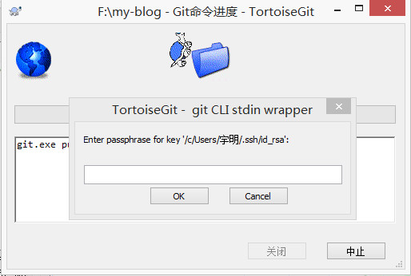

https 和 SSH 的区别
两者都可以克隆项目到本地，使用https比较方便，直接就clone到本地了，而使用SSH clone却需要先配置和添加好SSH key
-
前者可以随意克隆github上的项目，而不管是谁的；而后者则是你必须是你要克隆的项目的拥有者或管理员，且需要先添加 SSH key ，否则无法克隆
-
https url 在push的时候是需要验证用户名和密码的；而 SSH 在push的时候，是不需要输入用户名的，如果配置SSH key的时候设置了密码，则需要输入密码的，否则直接是不需要输入密码的。
基本步骤
生成公钥私钥
-
windows下打开Git安装目录，找到git-bash.exe即可使用ssh-keygen命令
-
windows下或者使用XShell自带的图形工具。工具-新建密钥生成向导
-
linux下直接使用ssh-keygen命令
命令#ssh-keygen -t [rsa|dsa] [-C "email"]
ssh-keygen -t rsa -C "1772314831@qq.com"
#提示输入文件名,直接回车，如果设置文件名可能比较麻烦
#提示输入密码
#重复输入密码
如果出现下面的图形，则说明生成成功。在C:\Users\宇明\.ssh目录就可以看到多了两个文件，一个是id_rsa一个是id_rsa.pub
The key's randomart image is:
+---[RSA 2048]----+
| ..=oo.+oo |
| ..O o.o o.= o |
|. E.B. .++O.+ . |
| . *.+ ++*+. . |
| = +.S . |
| + . o |
| . = |
| o o |
| . |
+----[SHA256]-----+
将公钥内容复制并上传于github
-
在个人信息设置SSH and GPG keys为所有项目设置一个统一的
-
在单个项目的设置里面设置Deploy keys，记得勾选Allow write access
测试连接
通过下面的命令如果成功说明可以了
$ ssh -T git@github.com
The authenticity of host 'github.com (192.30.255.113)' can't be established.
RSA key fingerprint is SHA256:nThbg6kXUpJWGl7E1IGOCspRomTxdCARLviKw6E5SY8.
Are you sure you want to continue connecting (yes/no)? yes
Warning: Permanently added 'github.com,192.30.255.113' (RSA) to the list of known hosts.
Enter passphrase for key '/c/Users/宇明/.ssh/id_rsa':
Hi TMaize! You've successfully authenticated, but GitHub does not provide shell access.
项目测试
将你的项目通过ssh clone到本地，如果为密钥设置了密码，会提示输入密钥密码，在push的时候会再次提示输入密钥的密码。如果在建立公钥私钥的时候没有设置密码，那么在clone push的在整个过程中都无需密码。
一些问题
使用TortoiseGit失败
在使用TortoiseGit图形界面clone时老是失败，只需要修改TortoiseGit的设计即可
在设置-网络里配置SSH客户端为E:\Git\usr\bin\ssh.exe即可

将本地项目的远端https修改为ssh
方法有三种：
-
修改命令
git remote origin set-url [url] -
先删后加
git remote rm origin git remote add origin [url] -
直接修改
项目目录/.git/config文件